CODING AGENTS AS PIXEL WORLD MODELS
traex/GPT-6.1-Sol · 0054
点击播放 · 原生 RGB 像素
逐轮保存的候选
回放视频、检查图与代码变化。
每份候选均可单独播放。实际图片检查记录在下方工具轨迹中。
候选 01播放与检查图
点击播放 · 原生 RGB 像素

展开代码变化
--- 上一保存版本
+++ 本次保存版本
@@ -0,0 +1,211 @@
+from pathlib import Path
+import math
+import numpy as np
+import cv2
+from PIL import Image, ImageDraw, ImageFilter
+from scipy.ndimage import gaussian_filter
+import artifact_io
+
+ROOT=Path(__file__).resolve().parent
+S=4
+W,H=256,144
+original=np.array(Image.open(ROOT/'first_frame.png').convert('RGB'))
+
+def mask_poly(points):
+ a=np.zeros((H,W),np.uint8)
+ cv2.fillPoly(a,[np.round(points).astype(np.int32)],255)
+ return a
+
+def line_mask(p1,p2,width=2):
+ a=np.zeros((H*S,W*S),np.uint8)
+ cv2.line(a,tuple(np.round(np.array(p1)*S).astype(int)),tuple(np.round(np.array(p2)*S).astype(int)),255,round(width*S),cv2.LINE_AA)
+ return cv2.resize(a,(W,H),interpolation=cv2.INTER_AREA)
+
+def ellipse_mask(c,rx,ry):
+ yy,xx=np.mgrid[:H,:W]
+ return (255*np.clip((1.1-((xx-c[0])/rx)**2-((yy-c[1])/ry)**2)*5,0,1)).astype(np.uint8)
+
+# The photographic enclosure remains locked in place throughout the shot.
+front_left=[(49.5,25),(60.1,117)]
+back_left=[(78.7,25),(89.3,108.5)]
+front_right=[(140.3,32),(141.8,130.5)]
+back_right=[(154,15),(156.7,113)]
+protect=np.zeros((H,W),np.uint8)
+for a,b,width in [(front_left[0],front_left[1],3.9),(back_left[0],back_left[1],3.7),(front_right[0],front_right[1],4.9),(back_right[0],back_right[1],3.8)]:
+ protect=np.maximum(protect,line_mask(a,b,width))
+protect[:25]=255
+
+# Isolate the withdrawing grabber; the blue lining and black jaws retain their photographic detail.
+tool_outline=[(-3,78),(13,77),(27,76),(35,73),(45,71),(56,71),(65,73),(78,77),(82,80),(82,84),(79,86),(69,86),(61,84),(60,89),(65,91),(68,94),(68,98),(58,101),(45,102),(32,102),(25,100),(21,96),(16,92),(-3,90)]
+tool_area=mask_poly(tool_outline)
+# Extend the repair slightly beyond all out-of-focus tool edges.
+tool_mask=cv2.dilate(tool_area,np.ones((3,3),np.uint8))
+tool_mask[protect>70]=0
+
+bg=cv2.inpaint(original,tool_mask,7,cv2.INPAINT_TELEA)
+# Reconstitute the uninterrupted wood grain below the tool from exposed wood on the same table.
+yy,xx=np.mgrid[:H,:W].astype(np.float32)
+source_x=xx-8
+source_y=yy+25
+wood=cv2.remap(original,source_x,source_y,cv2.INTER_LINEAR,borderMode=cv2.BORDER_REFLECT)
+wood_low=cv2.GaussianBlur(wood,(0,0),5)
+wood_detail=wood.astype(float)-wood_low.astype(float)
+# Fit the local softly varying tabletop illumination, excluding the device and tool.
+valid=(xx<86)&(yy>61)&(yy<120)&(tool_mask<10)&(protect<20)
+valid&=~((yy>100)&(xx>50))
+valid&=~((xx>67)&(yy>84)&(yy<98))
+valid&=(original[:,:,0]>65)&(original[:,:,2]<original[:,:,0]*.85)
+X=np.stack([np.ones((H,W)),xx,yy,xx*yy,xx*xx,yy*yy],axis=-1)
+coef=np.linalg.lstsq(X[valid],original[valid].astype(float),rcond=None)[0]
+wood_base=X@coef
+wood_repair=np.clip(wood_base+wood_detail*.75,0,255)
+alpha=cv2.GaussianBlur(tool_mask.astype(np.float32)/255,(0,0),.65)
+# All repair pixels must be limited to tabletop; original rails are restored later.
+bg=np.clip(bg*(1-alpha[...,None])+wood_repair*alpha[...,None],0,255).astype(np.uint8)
+
+centers=np.array([[72.5,89.9],[82.9,91.3],[110.6,96.5],[122.3,98.5],[134.2,100.5]])
+rest=np.array([[87.2,92.5],[98.9,94.5],[110.6,96.5],[122.3,98.5],[134.0,100.5]])
+radii=np.array([5.8,5.9,6.0,6.0,6.05])
+front=np.array([[61.7,20.2],[75.1,21.0],[89.7,21.9],[107.7,22.8],[121.9,23.4]])
+rear=np.array([[89.5,9.4],[101.8,9.8],[113.5,10.1],[125.5,10.5],[138.0,10.9]])
+repair=np.zeros((H,W),np.uint8)
+for i in [0,1,3,4]:
+ repair=np.maximum(repair,ellipse_mask(centers[i],7.2,7.3))
+ for pivot in [front[i],rear[i]]:
+ repair=np.maximum(repair,line_mask(pivot+np.array([0,1.5]),centers[i]-np.array([0,5.0]),1.6))
+# Remove the old reflected spheres and the blue tool reflection.
+for c in [[79.5,117.2],[89.6,118.5],[123.8,122],[135.7,124.2]]:
+ repair=np.maximum(repair,ellipse_mask(c,6.5,9))
+blue_ref=mask_poly([(58,109),(66,104),(77,109),(82,114),(71,117),(61,115)])
+repair=np.maximum(repair,blue_ref)
+repair[protect>90]=0
+repair[:25]=0
+bg=cv2.inpaint(bg,repair,4,cv2.INPAINT_TELEA)
+# Avoid ghost balls near the back-left corner: a planar match of the black plinth.
+# Inpainting above keeps every visible bevel and steel upright in its original location.
+Image.fromarray(bg).save(ROOT/'.tmp/background.png')
+
+# A photographic chrome texture is transported with each bob. Antialiased round silhouettes
+# separate it from the underlying dark tabletop and preserve environmental highlights.
+# Use the unobscured center bob for the first pair, and the original right bobs for the far pair.
+T=64
+balltex=[]
+ballalpha=[]
+for i in range(5):
+ j=2 if i<2 else i
+ cx,cy=centers[j]
+ r=radii[j]
+ v,u=np.mgrid[:T,:T].astype(np.float32)
+ nx=(u+.5-T/2)/(T/2);ny=(v+.5-T/2)/(T/2)
+ tx=cx+nx*r;ty=cy+ny*r
+ tex=cv2.remap(original,tx.astype(np.float32),ty.astype(np.float32),cv2.INTER_CUBIC,borderMode=cv2.BORDER_REFLECT).astype(float)
+ # Left pair reflect the slightly warmer tabletop and blue grip at release.
+ if i<2:
+ tex=tex*np.array([1.02,1.00,.97])
+ a=np.clip((1-np.sqrt(nx*nx+ny*ny))*T*.65,0,1)
+ balltex.append(np.clip(tex,0,255).astype(np.uint8))
+ ballalpha.append(a.astype(np.float32))
+
+bigbg=cv2.resize(bg,(W*S,H*S),interpolation=cv2.INTER_CUBIC).astype(float)
+bigoriginal=cv2.resize(original,(W*S,H*S),interpolation=cv2.INTER_CUBIC).astype(float)
+bigprotect=cv2.resize(protect,(W*S,H*S),interpolation=cv2.INTER_LINEAR).astype(float)/255
+# Keep foreground uprights in front of swinging balls and the retracting jaws.
+# The back uprights instead sit behind the pendulum spheres.
+fg=np.zeros((H,W),np.uint8)
+for a,b,width in [(front_left[0],front_left[1],3.6),(front_right[0],front_right[1],4.7),(back_right[0],back_right[1],3.5)]:
+ fg=np.maximum(fg,line_mask(a,b,width))
+fg_big=cv2.resize(fg,(W*S,H*S),interpolation=cv2.INTER_LINEAR).astype(float)/255
+
+# Extract tool without the balls or foreground steel.
+tool_rgb=cv2.resize(original,(W*S,H*S),interpolation=cv2.INTER_CUBIC).astype(float)
+tool_a=cv2.resize(tool_area,(W*S,H*S),interpolation=cv2.INTER_LINEAR).astype(float)/255
+# Covered upright pixels can be filled with adjacent grip color before it moves.
+remove=protect.copy();remove[:30]=0
+obj=cv2.inpaint(original,((remove>50)&(tool_area>0)).astype(np.uint8)*255,3,cv2.INPAINT_TELEA)
+tool_rgb=cv2.resize(obj,(W*S,H*S),interpolation=cv2.INTER_CUBIC).astype(float)
+# Draw sprites using inverse mappings to retain subpixel motion.
+def overlay_sprite(img,tex,alpha,c,rx,ry,opacity=1):
+ x,y=c
+ x0=max(0,int((x-rx-1)*S));x1=min(W*S,int((x+rx+1)*S)+1)
+ y0=max(0,int((y-ry-1)*S));y1=min(H*S,int((y+ry+1)*S)+1)
+ if x1<=x0 or y1<=y0:return
+ v,u=np.mgrid[y0:y1,x0:x1].astype(np.float32)
+ mx=((u+.5)/S-x)/(2*rx)*T+T/2-.5
+ my=((v+.5)/S-y)/(2*ry)*T+T/2-.5
+ mx=mx.astype(np.float32);my=my.astype(np.float32)
+ rgb=cv2.remap(tex,mx,my,cv2.INTER_LINEAR,borderMode=cv2.BORDER_CONSTANT)
+ a=cv2.remap(alpha,mx,my,cv2.INTER_LINEAR,borderMode=cv2.BORDER_CONSTANT)*opacity
+ img[y0:y1,x0:x1]=img[y0:y1,x0:x1]*(1-a[...,None])+rgb*a[...,None]
+
+
+def positions(t):
+ # Two-in/two-out ideal equal-mass Newton's cradle, with small viscous loss.
+ omega=2*math.pi/1.13
+ phase=math.cos(omega*t)
+ amplitude=15.6*math.exp(-.035*t)
+ pos=rest.copy()
+ displacements=np.zeros(5)
+ if phase>=0:
+ displacements[:2]=-amplitude*phase
+ else:
+ displacements[3:]=-amplitude*phase
+ for i,d in enumerate(displacements):
+ # The row is seen obliquely; rising bobs follow circular pendulum arcs.
+ L=82
+ rise=L-math.sqrt(L*L-d*d)
+ pos[i]+=[d,d*.090-rise*.90]
+ return pos,displacements
+
+
+def render(t):
+ img=bigbg.copy()
+ # Open jaw slightly and quickly withdraw the blue-black grabber to the left.
+ if t<.55:
+ dx=-115*max(0,t-.025)
+ dy=-2.2*min(1,t/.22)
+ M=np.array([[1,0,dx*S],[0,1,dy*S]],np.float32)
+ tr=cv2.warpAffine(tool_rgb,M,(W*S,H*S),flags=cv2.INTER_LINEAR)
+ ta=cv2.warpAffine(tool_a,M,(W*S,H*S),flags=cv2.INTER_LINEAR)
+ img=img*(1-ta[...,None])+tr*ta[...,None]
+ pos,dis=positions(t)
+ # Reflections are blurred, attenuated and confined to the black glossy plinth.
+ refl=np.zeros_like(img);refl_a=np.zeros((H*S,W*S),np.float32)
+ base_mask=mask_poly([(89,87),(162,99),(148,135),(53,117)])
+ basebig=cv2.resize(base_mask,(W*S,H*S),interpolation=cv2.INTER_LINEAR)/255.
+ for i in [0,1,3,4]:
+ d=dis[i];rise=82-math.sqrt(82*82-d*d)
+ rc=[rest[i,0]+1.1+d*.70,rest[i,1]+24.2+.12*d+rise*1.1]
+ # Diffuse reflected highlight plus a dark penumbra.
+ tex=balltex[i][::-1].copy()
+ tmp=np.zeros_like(img)
+ overlay_sprite(tmp,tex,ballalpha[i],rc,radii[i]*.88,8.0,.25)
+ tmp=cv2.GaussianBlur(tmp,(0,0),1.2*S)
+ img=np.clip(img+tmp*basebig[...,None]*.56,0,255)
+ # Filament pairs attach on two rails and meet at each sphere's top eyelet.
+ strings=np.zeros((H*S,W*S,3),np.uint8)
+ string_alpha=np.zeros((H*S,W*S),np.uint8)
+ for i in [0,1,3,4]:
+ cx,cy=pos[i];tip=(cx,cy-radii[i]+.4)
+ for k,pivot in enumerate([rear[i],front[i]]):
+ a=tuple(np.round((pivot+[0,1.0])*S).astype(int));b=tuple(np.round(np.array(tip)*S).astype(int))
+ cv2.line(strings,a,b,(197,196,185) if k==0 else (205,206,200),1,cv2.LINE_AA)
+ cv2.line(string_alpha,a,b,106 if k==0 else 116,1,cv2.LINE_AA)
+ sa=string_alpha.astype(float)/255
+ img=img*(1-sa[...,None])+strings*sa[...,None]
+ for i in [0,1,3,4]:
+ cx,cy=pos[i]
+ # Small polished attachment loop above each sphere.
+ cv2.ellipse(img,(round(cx*S),round((cy-radii[i]+.15)*S)),(round(1*S),round(.8*S)),0,185,355,(118,121,112),max(1,round(.5*S)),cv2.LINE_AA)
+ overlay_sprite(img,balltex[i],ballalpha[i],pos[i],radii[i],radii[i])
+ img=img*(1-fg_big[...,None])+bigoriginal*fg_big[...,None]
+ # A small shutter integration blurs the moving bobs naturally at 4 fps sampling.
+ return cv2.resize(np.clip(img,0,255).astype(np.uint8),(W,H),interpolation=cv2.INTER_AREA)
+
+frames=[original]
+for n in range(1,20):
+ t=n/4
+ # Real-time sampling with a short photographic exposure, not time-lapse.
+ samples=[render(t+q) for q in [-.009,0,.009]]
+ frames.append(np.clip(np.mean(samples,axis=0),0,255).astype(np.uint8))
+frames=np.stack(frames)
+artifact_io.save(frames,ROOT)
候选 02播放与检查图
点击播放 · 原生 RGB 像素
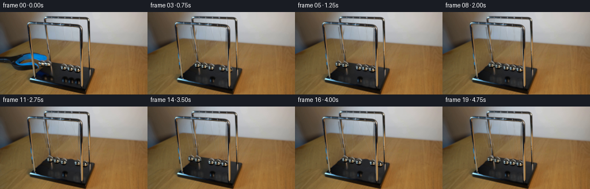
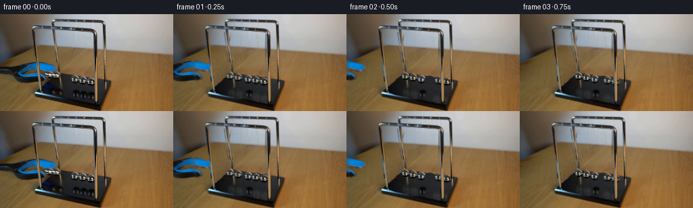
展开代码变化
--- 上一保存版本 +++ 本次保存版本 @@ -83,6 +83,63 @@ bg=cv2.inpaint(bg,repair,4,cv2.INPAINT_TELEA) # Avoid ghost balls near the back-left corner: a planar match of the black plinth. # Inpainting above keeps every visible bevel and steel upright in its original location. +# Rebuild small vacated areas using the local surface, rather than allowing +# the highly reflective ball highlights to bleed into the reconstruction. +bg=original.copy().astype(float) +# Filaments are optically thin: replace the old paths by their adjacent backdrop. +for i in [0,1,3,4]: + for pivot in [front[i],rear[i]]: + endpoint=centers[i]-[0,5.5] + a=pivot+[0,3.0] + m=line_mask(a,endpoint,1.7).astype(float)/255 + m[:26]=0 + # Sample sideways on the same horizontal scanline, preserving the wall/table seam. + left=cv2.remap(original,xx-3.2,yy,cv2.INTER_LINEAR,borderMode=cv2.BORDER_REFLECT).astype(float) + right=cv2.remap(original,xx+3.2,yy,cv2.INTER_LINEAR,borderMode=cv2.BORDER_REFLECT).astype(float) + replacement=(left+right)/2 + m*=1-protect.astype(float)/255 + bg=bg*(1-m[...,None])+replacement*m[...,None] +# Fill the exposed tabletop, removing the entire grip silhouette and its soft shadow. +woodmask=mask_poly([(-3,75),(28,72),(40,67),(59,67),(76,71),(85,79),(88,93),(69,106),(23,108),(-3,98)]) +for i in [0,1,3,4]: + woodmask=np.maximum(woodmask,ellipse_mask(centers[i],7.7,7.7)) +basepoly=[(85.8,86.3),(162.4,98.2),(147.7,135.3),(50.5,116.8)] +basemask=mask_poly(basepoly) +woodmask[basemask>0]=0 +wa=gaussian_filter(woodmask.astype(float)/255,.7) +cleanwood=cv2.remap(original,(xx+165).astype(np.float32),np.minimum(yy+18,143).astype(np.float32),cv2.INTER_LINEAR,borderMode=cv2.BORDER_REFLECT).astype(float) +detail=cleanwood-cv2.GaussianBlur(cleanwood,(0,0),3) +woodrgb=np.clip(wood_base+detail*.85,0,255) +bg=bg*(1-wa[...,None])+woodrgb*wa[...,None] +# Recover the satin-black top. Its subdued gradient is fitted only to clear areas. +plane_valid=(basemask>0)&(protect<10)&(yy<130)&(xx>91)&(xx<137)&(yy>103)&(yy<113) +plane_valid|=(basemask>0)&(xx>144)&(xx<151)&(yy>101)&(yy<120) +A=np.stack([np.ones((H,W)),xx,yy],axis=-1) +c=np.linalg.lstsq(A[plane_valid],original[plane_valid].astype(float),rcond=None)[0] +plane=A@c +# Perspective darkens the far left end and preserves the original texture farther right. +plane-=np.maximum(0,96-xx)[...,None]*.48 +rng=np.random.default_rng(51) +plane+=gaussian_filter(rng.normal(0,.8,(H,W)),.55)[...,None] +plane=np.clip(plane,4,65) +pm=np.zeros((H,W),np.uint8) +for i in [0,1,3,4]: + pm=np.maximum(pm,ellipse_mask(centers[i],7.8,7.8)) + pm=np.maximum(pm,ellipse_mask([rest[i,0]+1,rest[i,1]+24.0],8,10)) +# Old first pair has reflections at the extended amplitude as well. +for cc in [[79,116],[88,118]]: + pm=np.maximum(pm,ellipse_mask(cc,8,8)) +pm=np.maximum(pm,mask_poly([(56,112),(69,102),(81,106),(87,117),(72,120)])) +pm=(pm.astype(float)/255)*(basemask.astype(float)/255) +# Keep all bevels unmodified: suppress the repair at the front edge of the plinth. +edgey=116.8+(xx-50.5)*(18.5/97.2) +pm*=np.clip((edgey-yy-.3)/1.7,0,1) +pm=gaussian_filter(pm,.4)*(basemask.astype(float)/255) +bg=bg*(1-pm[...,None])+plane*pm[...,None] +# Restore static chrome uprights after every local backdrop repair. +pa=protect.astype(float)/255 +bg=bg*(1-pa[...,None])+original*pa[...,None] +bg=np.clip(bg,0,255).astype(np.uint8) Image.fromarray(bg).save(ROOT/'.tmp/background.png') # A photographic chrome texture is transported with each bob. Antialiased round silhouettes
候选 03播放与检查图
点击播放 · 原生 RGB 像素
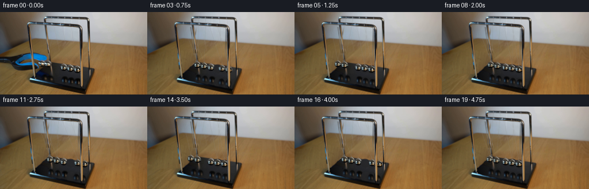
展开代码变化
--- 上一保存版本
+++ 本次保存版本
@@ -139,6 +139,20 @@
# Restore static chrome uprights after every local backdrop repair.
pa=protect.astype(float)/255
bg=bg*(1-pa[...,None])+original*pa[...,None]
+# The initially lifted pair briefly occluded the rear-left post. Continue its
+# narrow brushed-metal profile through the vacated occlusion, not the ball glint.
+for y in range(83,98):
+ cx=78.7+(y-25)*10.6/83.5
+ for x in range(int(cx)-2,int(cx)+3):
+ offset=x-cx
+ ya,yb=78,100
+ xa=78.7+(ya-25)*10.6/83.5+offset
+ xb=78.7+(yb-25)*10.6/83.5+offset
+ c1=cv2.getRectSubPix(original,(1,1),(float(xa),float(ya)))[0,0].astype(float)
+ c2=cv2.getRectSubPix(original,(1,1),(float(xb),float(yb)))[0,0].astype(float)
+ weight=np.clip((y-ya)/(yb-ya),0,1)
+ blend=np.clip(2.0-abs(offset),0,1)
+ bg[y,x]=bg[y,x]*(1-blend)+(c1*(1-weight)+c2*weight)*blend
bg=np.clip(bg,0,255).astype(np.uint8)
Image.fromarray(bg).save(ROOT/'.tmp/background.png')
@@ -163,6 +177,14 @@
balltex.append(np.clip(tex,0,255).astype(np.uint8))
ballalpha.append(a.astype(np.float32))
+# Use the actual reflection of the middle sphere as a low-contrast reflected
+# environment map for the other identical spheres on the glossy black base.
+v,u=np.mgrid[:T,:T].astype(np.float32)
+nx=(u+.5-T/2)/(T/2);ny=(v+.5-T/2)/(T/2)
+rtx=(111.5+nx*6.1).astype(np.float32);rty=(119.9+ny*8.1).astype(np.float32)
+reftex=cv2.remap(original,rtx,rty,cv2.INTER_CUBIC,borderMode=cv2.BORDER_REFLECT)
+refalpha=np.clip((1-np.sqrt(nx*nx+ny*ny))*.65*T,0,1).astype(np.float32)
+
bigbg=cv2.resize(bg,(W*S,H*S),interpolation=cv2.INTER_CUBIC).astype(float)
bigoriginal=cv2.resize(original,(W*S,H*S),interpolation=cv2.INTER_CUBIC).astype(float)
bigprotect=cv2.resize(protect,(W*S,H*S),interpolation=cv2.INTER_LINEAR).astype(float)/255
@@ -232,12 +254,11 @@
for i in [0,1,3,4]:
d=dis[i];rise=82-math.sqrt(82*82-d*d)
rc=[rest[i,0]+1.1+d*.70,rest[i,1]+24.2+.12*d+rise*1.1]
- # Diffuse reflected highlight plus a dark penumbra.
- tex=balltex[i][::-1].copy()
- tmp=np.zeros_like(img)
- overlay_sprite(tmp,tex,ballalpha[i],rc,radii[i]*.88,8.0,.25)
- tmp=cv2.GaussianBlur(tmp,(0,0),1.2*S)
- img=np.clip(img+tmp*basebig[...,None]*.56,0,255)
+ # Reflection follows the lateral motion, with the expected vertical mirroring.
+ reflect_layer=img.copy()
+ overlay_sprite(reflect_layer,reftex,refalpha,rc,radii[i]*.97,8.1,.82)
+ difference=cv2.GaussianBlur(reflect_layer-img,(0,0),.50*S)
+ img=np.clip(img+difference*basebig[...,None],0,255)
# Filament pairs attach on two rails and meet at each sphere's top eyelet.
strings=np.zeros((H*S,W*S,3),np.uint8)
string_alpha=np.zeros((H*S,W*S),np.uint8)
可观测工具轨迹
实际执行的命令与返回图片。
命令 1exit 0
/bin/bash -lc "ls -la && cat prompt.txt && printf '\\n---RULES---\\n' && cat GENERATION_RULES.md"
命令 2exit 0
/bin/bash -lc "cat artifact_io.py && python - <<'PY'
from PIL import Image
im=Image.open('first_frame.png');print(im.size);im.resize((1024,576)).save('.tmp/enlarged.png')
PY"命令 3exit 0
/bin/bash -lc "python - <<'PY'
from PIL import Image
im=Image.open('first_frame.png');im.crop((40,5,158,113)).resize((944,864)).save('.tmp/detail.png')
PY"命令 4exit 0
/bin/bash -lc "python - <<'PY'
import cv2,numpy,scipy
print(cv2.__version__)
from PIL import Image
im=Image.open('first_frame.png');im.crop((0,60,155,143)).resize((1240,664)).save('.tmp/lower.png')
PY"命令 5exit 0
/bin/bash -lc "python - <<'PY'
from PIL import Image,ImageEnhance,ImageFilter
im=Image.open('first_frame.png');im=ImageEnhance.Contrast(im).enhance(2);im.resize((1536,864)).save('.tmp/contrast.png')
PY"命令 6exit 0
/bin/bash -lc "python - <<'PY'
from PIL import Image,ImageDraw
im=Image.open('first_frame.png').resize((1024,576),Image.Resampling.NEAREST)
d=ImageDraw.Draw(im)
for x in range(60,150,5):
d.line((x*4,82*4,x*4,108*4),fill=(150,40,40),width=1);d.text((x*4,79*4),str(x),fill=(255,30,30))
for y in range(85,106,5):
d.line((60*4,y*4,148*4,y*4),fill=(150,40,40),width=1);d.text((148*4,y*4),str(y),fill=(255,20,20))
im.save('.tmp/grid.png')
PY"命令 7exit 0
/bin/bash -lc "python - <<'PY'
from PIL import Image,ImageEnhance,ImageFilter
im=Image.open('first_frame.png').crop((48,9,143,100)).resize((760,728))
im=ImageEnhance.Contrast(im).enhance(1.3);im.save('.tmp/strings.png')
PY"命令 8exit 1
/bin/bash -lc "cat > generate.py <<'PY'
from pathlib import Path
import math
import numpy as np
import cv2
from PIL import Image, ImageDraw, ImageFilter
from scipy.ndimage import gaussian_filter
import artifact_io
ROOT=Path(__file__).resolve().parent
S=4
W,H=256,144
original=np.array(Image.open(ROOT/'first_frame.png').convert('RGB'))
def mask_poly(points):
a=np.zeros((H,W),np.uint8)
cv2.fillPoly(a,[np.round(points).astype(np.int32)],255)
return a
def line_mask(p1,p2,width=2):
a=np.zeros((H*S,W*S),np.uint8)
cv2.line(a,tuple(np.round(np.array(p1)*S).astype(int)),tuple(np.round(np.array(p2)*S).astype(int)),255,round(width*S),cv2.LINE_AA)
return cv2.resize(a,(W,H),interpolation=cv2.INTER_AREA)
def ellipse_mask(c,rx,ry):
yy,xx=np.mgrid[:H,:W]
return (255*np.clip((1.1-((xx-c[0])/rx)**2-((yy-c[1])/ry)**2)*5,0,1)).astype(np.uint8)
# The photographic enclosure remains locked in place throughout the shot.
front_left=[(49.5,25),(60.1,117)]
back_left=[(78.7,25),(89.3,108.5)]
front_right=[(140.3,32),(141.8,130.5)]
back_right=[(154,15),(156.7,113)]
protect=np.zeros((H,W),np.uint8)
for a,b,width in [(front_left[0],front_left[1],3.9),(back_left[0],back_left[1],3.7),(front_right[0],front_right[1],4.9),(back_right[0],back_right[1],3.8)]:
protect=np.maximum(protect,line_mask(a,b,width))
protect[:25]=255
# Isolate the withdrawing grabber; the blue lining and black jaws retain their photographic detail.
tool_outline=[(-3,78),(13,77),(27,76),(35,73),(45,71),(56,71),(65,73),(78,77),(82,80),(82,84),(79,86),(69,86),(61,84),(60,89),(65,91),(68,94),(68,98),(58,101),(45,102),(32,102),(25,100),(21,96),(16,92),(-3,90)]
tool_area=mask_poly(tool_outline)
# Extend the repair slightly beyond all out-of-focus tool edges.
tool_mask=cv2.dilate(tool_area,np.ones((3,3),np.uint8))
tool_mask[protect>70]=0
bg=cv2.inpaint(original,tool_mask,7,cv2.INPAINT_TELEA)
# Reconstitute the uninterrupted wood grain below the tool from exposed wood on the same table.
yy,xx=np.mgrid[:H,:W].astype(np.float32)
source_x=xx-8
source_y=yy+25
wood=cv2.remap(original,source_x,source_y,cv2.INTER_LINEAR,borderMode=cv2.BORDER_REFLECT)
wood_low=cv2.GaussianBlur(wood,(0,0),5)
wood_detail=wood.astype(float)-wood_low.astype(float)
# Fit the local softly varying tabletop illumination, excluding the device and tool.
valid=(xx<86)&(yy>61)&(yy<120)&(tool_mask<10)&(protect<20)
valid&=~((yy>100)&(xx>50))
valid&=~((xx>67)&(yy>84)&(yy<98))
valid&=(original[:,:,0]>65)&(original[:,:,2]<original[:,:,0]*.85)
X=np.stack([np.ones((H,W)),xx,yy,xx*yy,xx*xx,yy*yy],axis=-1)
coef=np.linalg.lstsq(X[valid],original[valid].astype(float),rcond=None)[0]
wood_base=X@coef
wood_repair=np.clip(wood_base+wood_detail*.75,0,255)
alpha=cv2.GaussianBlur(tool_mask.astype(np.float32)/255,(0,0),.65)
# All repair pixels must be limited to tabletop; original rails are restored later.
bg=np.clip(bg*(1-alpha[...,None])+wood_repair*alpha[...,None],0,255).astype(np.uint8)
centers=np.array([[72.5,89.9],[82.9,91.3],[110.6,96.5],[122.3,98.5],[134.2,100.5]])
rest=np.array([[87.2,92.5],[98.9,94.5],[110.6,96.5],[122.3,98.5],[134.0,100.5]])
radii=np.array([5.8,5.9,6.0,6.0,6.05])
front=np.array([[61.7,20.2],[75.1,21.0],[89.7,21.9],[107.7,22.8],[121.9,23.4]])
rear=np.array([[89.5,9.4],[101.8,9.8],[113.5,10.1],[125.5,10.5],[138.0,10.9]])
repair=np.zeros((H,W),np.uint8)
for i in [0,1,3,4]:
repair=np.maximum(repair,ellipse_mask(centers[i],7.2,7.3))
for pivot in [front[i],rear[i]]:
repair=np.maximum(repair,line_mask(pivot+np.array([0,1.5]),centers[i]-np.array([0,5.0]),1.6))
# Remove the old reflected spheres and the blue tool reflection.
for c in [[79.5,117.2],[89.6,118.5],[123.8,122],[135.7,124.2]]:
repair=np.maximum(repair,ellipse_mask(c,6.5,9))
blue_ref=mask_poly([(58,109),(66,104),(77,109),(82,114),(71,117),(61,115)])
repair=np.maximum(repair,blue_ref)
repair[protect>90]=0
repair[:25]=0
bg=cv2.inpaint(bg,repair,4,cv2.INPAINT_TELEA)
# Avoid ghost balls near the back-left corner: a planar match of the black plinth.
# Inpainting above keeps every visible bevel and steel upright in its original location.
Image.fromarray(bg).save(ROOT/'.tmp/background.png')
# A photographic chrome texture is transported with each bob. Antialiased round silhouettes
# separate it from the underlying dark tabletop and preserve environmental highlights.
# Use the unobscured center bob for the first pair, and the original right bobs for the far pair.
T=64
balltex=[]
ballalpha=[]
for i in range(5):
j=2 if i<2 else i
cx,cy=centers[j]
r=radii[j]
v,u=np.mgrid[:T,:T].astype(np.float32)
nx=(u+.5-T/2)/(T/2);ny=(v+.5-T/2)/(T/2)
tx=cx+nx*r;ty=cy+ny*r
tex=cv2.remap(original,tx,ty,cv2.INTER_CUBIC,borderMode=cv2.BORDER_REFLECT).astype(float)
# Left pair reflect the slightly warmer tabletop and blue grip at release.
if i<2:
tex=tex*np.array([1.02,1.00,.97])
a=np.clip((1-np.sqrt(nx*nx+ny*ny))*T*.65,0,1)
balltex.append(np.clip(tex,0,255).astype(np.uint8))
ballalpha.append(a.astype(np.float32))
bigbg=cv2.resize(bg,(W*S,H*S),interpolation=cv2.INTER_CUBIC).astype(float)
bigoriginal=cv2.resize(original,(W*S,H*S),interpolation=cv2.INTER_CUBIC).astype(float)
bigprotect=cv2.resize(protect,(W*S,H*S),interpolation=cv2.INTER_LINEAR).astype(float)/255
# Keep foreground uprights in front of swinging balls and the retracting jaws.
# The back uprights instead sit behind the pendulum spheres.
fg=np.zeros((H,W),np.uint8)
for a,b,width in [(front_left[0],front_left[1],3.6),(front_right[0],front_right[1],4.7),(back_right[0],back_right[1],3.5)]:
fg=np.maximum(fg,line_mask(a,b,width))
fg_big=cv2.resize(fg,(W*S,H*S),interpolation=cv2.INTER_LINEAR).astype(float)/255
# Extract tool without the balls or foreground steel.
tool_rgb=cv2.resize(original,(W*S,H*S),interpolation=cv2.INTER_CUBIC).astype(float)
tool_a=cv2.resize(tool_area,(W*S,H*S),interpolation=cv2.INTER_LINEAR).astype(float)/255
# Covered upright pixels can be filled with adjacent grip color before it moves.
remove=protect.copy();remove[:30]=0
obj=cv2.inpaint(original,((remove>50)&(tool_area>0)).astype(np.uint8)*255,3,cv2.INPAINT_TELEA)
tool_rgb=cv2.resize(obj,(W*S,H*S),interpolation=cv2.INTER_CUBIC).astype(float)
# Draw sprites using inverse mappings to retain subpixel motion.
def overlay_sprite(img,tex,alpha,c,rx,ry,opacity=1):
x,y=c
x0=max(0,int((x-rx-1)*S));x1=min(W*S,int((x+rx+1)*S)+1)
y0=max(0,int((y-ry-1)*S));y1=min(H*S,int((y+ry+1)*S)+1)
if x1<=x0 or y1<=y0:return
v,u=np.mgrid[y0:y1,x0:x1].astype(np.float32)
mx=((u+.5)/S-x)/(2*rx)*T+T/2-.5
my=((v+.5)/S-y)/(2*ry)*T+T/2-.5
rgb=cv2.remap(tex,mx,my,cv2.INTER_LINEAR,borderMode=cv2.BORDER_CONSTANT)
a=cv2.remap(alpha,mx,my,cv2.INTER_LINEAR,borderMode=cv2.BORDER_CONSTANT)*opacity
img[y0:y1,x0:x1]=img[y0:y1,x0:x1]*(1-a[...,None])+rgb*a[...,None]
def positions(t):
# Two-in/two-out ideal equal-mass Newton's cradle, with small viscous loss.
omega=2*math.pi/1.13
phase=math.cos(omega*t)
amplitude=15.6*math.exp(-.035*t)
pos=rest.copy()
displacements=np.zeros(5)
if phase>=0:
displacements[:2]=-amplitude*phase
else:
displacements[3:]=-amplitude*phase
for i,d in enumerate(displacements):
# The row is seen obliquely; rising bobs follow circular pendulum arcs.
L=82
rise=L-math.sqrt(L*L-d*d)
pos[i]+=[d,d*.090-rise*.90]
return pos,displacements
def render(t):
img=bigbg.copy()
# Open jaw slightly and quickly withdraw the blue-black grabber to the left.
if t<.55:
dx=-115*max(0,t-.025)
dy=-2.2*min(1,t/.22)
M=np.array([[1,0,dx*S],[0,1,dy*S]],np.float32)
tr=cv2.warpAffine(tool_rgb,M,(W*S,H*S),flags=cv2.INTER_LINEAR)
ta=cv2.warpAffine(tool_a,M,(W*S,H*S),flags=cv2.INTER_LINEAR)
img=img*(1-ta[...,None])+tr*ta[...,None]
pos,dis=positions(t)
# Reflections are blurred, attenuated and confined to the black glossy plinth.
refl=np.zeros_like(img);refl_a=np.zeros((H*S,W*S),np.float32)
base_mask=mask_poly([(89,87),(162,99),(148,135),(53,117)])
basebig=cv2.resize(base_mask,(W*S,H*S),interpolation=cv2.INTER_LINEAR)/255.
for i in [0,1,3,4]:
d=dis[i];rise=82-math.sqrt(82*82-d*d)
rc=[rest[i,0]+1.1+d*.70,rest[i,1]+24.2+.12*d+rise*1.1]
# Diffuse reflected highlight plus a dark penumbra.
tex=balltex[i][::-1].copy()
tmp=np.zeros_like(img)
overlay_sprite(tmp,tex,ballalpha[i],rc,radii[i]*.88,8.0,.25)
tmp=cv2.GaussianBlur(tmp,(0,0),1.2*S)
img=np.clip(img+tmp*basebig[...,None]*.56,0,255)
# Filament pairs attach on two rails and meet at each sphere's top eyelet.
strings=np.zeros((H*S,W*S,3),np.uint8)
string_alpha=np.zeros((H*S,W*S),np.uint8)
for i in [0,1,3,4]:
cx,cy=pos[i];tip=(cx,cy-radii[i]+.4)
for k,pivot in enumerate([rear[i],front[i]]):
a=tuple(np.round((pivot+[0,1.0])*S).astype(int));b=tuple(np.round(np.array(tip)*S).astype(int))
cv2.line(strings,a,b,(197,196,185) if k==0 else (205,206,200),1,cv2.LINE_AA)
cv2.line(string_alpha,a,b,106 if k==0 else 116,1,cv2.LINE_AA)
sa=string_alpha.astype(float)/255
img=img*(1-sa[...,None])+strings*sa[...,None]
for i in [0,1,3,4]:
cx,cy=pos[i]
# Small polished attachment loop above each sphere.
cv2.ellipse(img,(round(cx*S),round((cy-radii[i]+.15)*S)),(round(1*S),round(.8*S)),0,185,355,(118,121,112),max(1,round(.5*S)),cv2.LINE_AA)
overlay_sprite(img,balltex[i],ballalpha[i],pos[i],radii[i],radii[i])
img=img*(1-fg_big[...,None])+bigoriginal*fg_big[...,None]
# A small shutter integration blurs the moving bobs naturally at 4 fps sampling.
return cv2.resize(np.clip(img,0,255).astype(np.uint8),(W,H),interpolation=cv2.INTER_AREA)
frames=[original]
for n in range(1,20):
t=n/4
# Real-time sampling with a short photographic exposure, not time-lapse.
samples=[render(t+q) for q in [-.009,0,.009]]
frames.append(np.clip(np.mean(samples,axis=0),0,255).astype(np.uint8))
frames=np.stack(frames)
artifact_io.save(frames,ROOT)
PY
python generate.py"命令 9exit 1
/bin/bash -lc "sed -i 's/cv2.remap(original,tx,ty,/cv2.remap(original,tx.astype(np.float32),ty.astype(np.float32),/' generate.py python generate.py"
命令 10exit 0
/bin/bash -lc "sed -i '/ rgb=cv2.remap(tex/i\\ mx=mx.astype(np.float32);my=my.astype(np.float32)' generate.py python generate.py"
命令 11exit 0
/bin/bash -lc "python - <<'PY'
from PIL import Image
Image.open('.tmp/background.png').resize((1024,576)).save('.tmp/background_big.png')
PY"命令 12exit 0
/bin/bash -lc "python - <<'PY'
from PIL import Image
import numpy as np
im=np.array(Image.open('first_frame.png'))
for y in [90,100,105,110,115,120,125]:
print(y,[(x,im[y,x].tolist()) for x in [70,80,90,100,110,120,130,145]])
PY"命令 13exit 0
/bin/bash -lc "python - <<'PY'
p='generate.py'
s=open(p).read();start=s.index('Image.fromarray(bg).save')
end=s.index('\\n# A photographic chrome texture',start)
new='''# Rebuild small vacated areas using the local surface, rather than allowing
# the highly reflective ball highlights to bleed into the reconstruction.
bg=original.copy().astype(float)
# Filaments are optically thin: replace the old paths by their adjacent backdrop.
for i in [0,1,3,4]:
for pivot in [front[i],rear[i]]:
endpoint=centers[i]-[0,5.5]
a=pivot+[0,3.0]
m=line_mask(a,endpoint,1.7).astype(float)/255
m[:26]=0
# Sample sideways on the same horizontal scanline, preserving the wall/table seam.
left=cv2.remap(original,xx-3.2,yy,cv2.INTER_LINEAR,borderMode=cv2.BORDER_REFLECT).astype(float)
right=cv2.remap(original,xx+3.2,yy,cv2.INTER_LINEAR,borderMode=cv2.BORDER_REFLECT).astype(float)
replacement=(left+right)/2
m*=1-protect.astype(float)/255
bg=bg*(1-m[...,None])+replacement*m[...,None]
# Fill the exposed tabletop, removing the entire grip silhouette and its soft shadow.
woodmask=mask_poly([(-3,75),(28,72),(40,67),(59,67),(76,71),(85,79),(88,93),(69,106),(23,108),(-3,98)])
for i in [0,1,3,4]:
woodmask=np.maximum(woodmask,ellipse_mask(centers[i],7.7,7.7))
basepoly=[(85.8,86.3),(162.4,98.2),(147.7,135.3),(50.5,116.8)]
basemask=mask_poly(basepoly)
woodmask[basemask>0]=0
wa=gaussian_filter(woodmask.astype(float)/255,.7)
cleanwood=cv2.remap(original,(xx+165).astype(np.float32),np.minimum(yy+18,143).astype(np.float32),cv2.INTER_LINEAR,borderMode=cv2.BORDER_REFLECT).astype(float)
detail=cleanwood-cv2.GaussianBlur(cleanwood,(0,0),3)
woodrgb=np.clip(wood_base+detail*.85,0,255)
bg=bg*(1-wa[...,None])+woodrgb*wa[...,None]
# Recover the satin-black top. Its subdued gradient is fitted only to clear areas.
plane_valid=(basemask>0)&(protect<10)&(yy<130)&(xx>91)&(xx<137)&(yy>103)&(yy<113)
plane_valid|=(basemask>0)&(xx>144)&(xx<151)&(yy>101)&(yy<120)
A=np.stack([np.ones((H,W)),xx,yy],axis=-1)
c=np.linalg.lstsq(A[plane_valid],original[plane_valid].astype(float),rcond=None)[0]
plane=A@c
# Perspective darkens the far left end and preserves the original texture farther right.
plane-=np.maximum(0,96-xx)[...,None]*.48
rng=np.random.default_rng(51)
plane+=gaussian_filter(rng.normal(0,.8,(H,W)),.55)[...,None]
plane=np.clip(plane,4,65)
pm=np.zeros((H,W),np.uint8)
for i in [0,1,3,4]:
pm=np.maximum(pm,ellipse_mask(centers[i],7.8,7.8))
pm=np.maximum(pm,ellipse_mask([rest[i,0]+1,rest[i,1]+24.0],8,10))
# Old first pair has reflections at the extended amplitude as well.
for cc in [[79,116],[88,118]]:
pm=np.maximum(pm,ellipse_mask(cc,8,8))
pm=np.maximum(pm,mask_poly([(56,112),(69,102),(81,106),(87,117),(72,120)]))
pm=(pm.astype(float)/255)*(basemask.astype(float)/255)
# Keep all bevels unmodified: suppress the repair at the front edge of the plinth.
edgey=116.8+(xx-50.5)*(18.5/97.2)
pm*=np.clip((edgey-yy-.3)/1.7,0,1)
pm=gaussian_filter(pm,.4)*(basemask.astype(float)/255)
bg=bg*(1-pm[...,None])+plane*pm[...,None]
# Restore static chrome uprights after every local backdrop repair.
pa=protect.astype(float)/255
bg=bg*(1-pa[...,None])+original*pa[...,None]
bg=np.clip(bg,0,255).astype(np.uint8)
Image.fromarray(bg).save(ROOT/'.tmp/background.png')
'''
s=s[:start]+new+s[end:]
open(p,'w').write(s)
PY
python generate.py"命令 14exit 0
/bin/bash -lc "python - <<'PY'
p='generate.py';s=open(p).read()
s=s.replace(\"bg=np.clip(bg,0,255).astype(np.uint8)\\nImage.fromarray(bg)\",'''# The initially lifted pair briefly occluded the rear-left post. Continue its
# narrow brushed-metal profile through the vacated occlusion, not the ball glint.
for y in range(83,98):
cx=78.7+(y-25)*10.6/83.5
for x in range(int(cx)-2,int(cx)+3):
offset=x-cx
ya,yb=78,100
xa=78.7+(ya-25)*10.6/83.5+offset
xb=78.7+(yb-25)*10.6/83.5+offset
c1=cv2.getRectSubPix(original,(1,1),(float(xa),float(ya)))[0,0].astype(float)
c2=cv2.getRectSubPix(original,(1,1),(float(xb),float(yb)))[0,0].astype(float)
weight=np.clip((y-ya)/(yb-ya),0,1)
blend=np.clip(2.0-abs(offset),0,1)
bg[y,x]=bg[y,x]*(1-blend)+(c1*(1-weight)+c2*weight)*blend
bg=np.clip(bg,0,255).astype(np.uint8)
Image.fromarray(bg)''')
needle='bigbg=cv2.resize(bg'
insert='''# Use the actual reflection of the middle sphere as a low-contrast reflected
# environment map for the other identical spheres on the glossy black base.
v,u=np.mgrid[:T,:T].astype(np.float32)
nx=(u+.5-T/2)/(T/2);ny=(v+.5-T/2)/(T/2)
rtx=(111.5+nx*6.1).astype(np.float32);rty=(119.9+ny*8.1).astype(np.float32)
reftex=cv2.remap(original,rtx,rty,cv2.INTER_CUBIC,borderMode=cv2.BORDER_REFLECT)
refalpha=np.clip((1-np.sqrt(nx*nx+ny*ny))*.65*T,0,1).astype(np.float32)
'''
s=s.replace(needle,insert+needle)
a=s.index(' # Diffuse reflected highlight');b=s.index(' # Filament pairs',a)
s=s[:a]+''' # Reflection follows the lateral motion, with the expected vertical mirroring.
reflect_layer=img.copy()
overlay_sprite(reflect_layer,reftex,refalpha,rc,radii[i]*.97,8.1,.82)
difference=cv2.GaussianBlur(reflect_layer-img,(0,0),.50*S)
img=np.clip(img+difference*basebig[...,None],0,255)
'''+s[b:]
open(p,'w').write(s)
PY
python generate.py"命令 15exit 0
/bin/bash -lc "python - <<'PY'
from PIL import Image
import numpy as np
from pathlib import Path
first=np.asarray(Image.open('first_frame.png').convert('RGB'))
frames=np.stack([np.asarray(Image.open(f'frames/{i:02d}.png').convert('RGB')) for i in range(20)])
assert frames.shape==(20,144,256,3) and frames.dtype==np.uint8
assert np.array_equal(first,frames[0])
print('Verified 20 RGB frames at 256x144; frame 00 is pixel-identical.')
print('Outputs:',', '.join(p.name for p in [Path('pixels.npz'),Path('index.html'),Path('inspection.png'),Path('generate.py')]))
PY"视觉工具实际返回图片 1
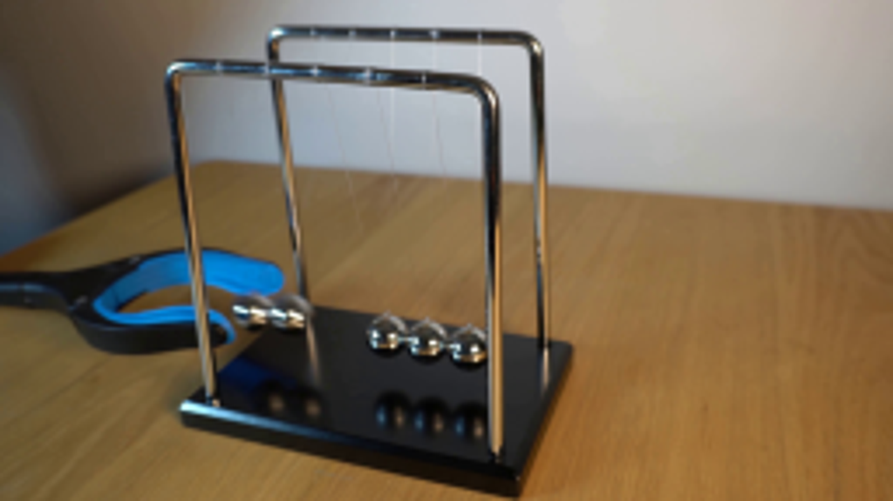
视觉工具实际返回图片 2
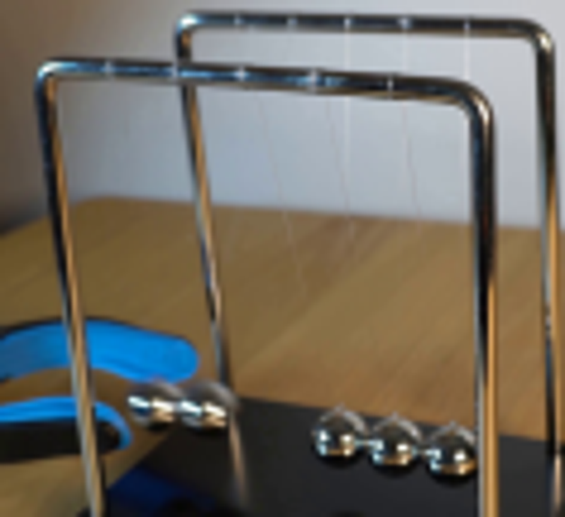
视觉工具实际返回图片 3
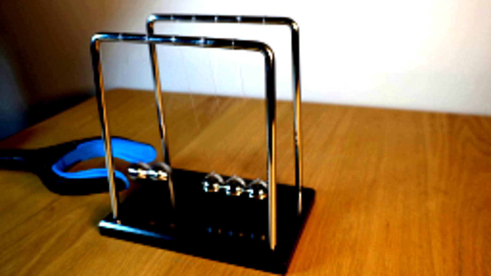
视觉工具实际返回图片 4
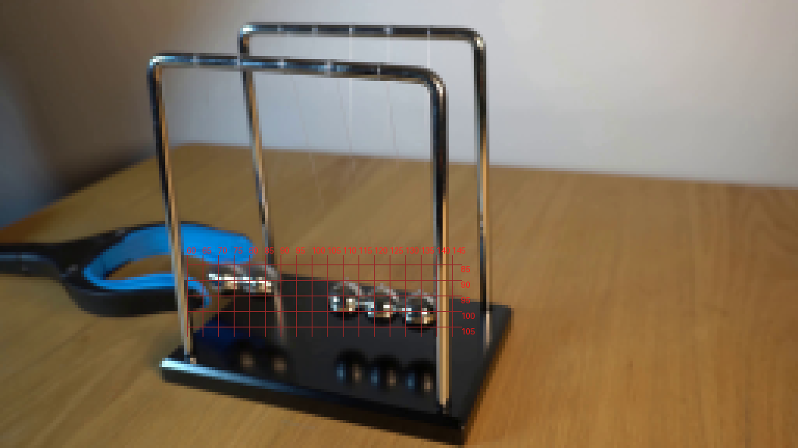
视觉工具实际返回图片 5
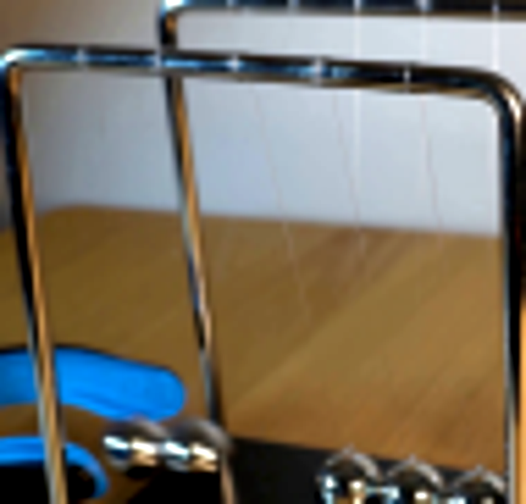
视觉工具实际返回图片 6
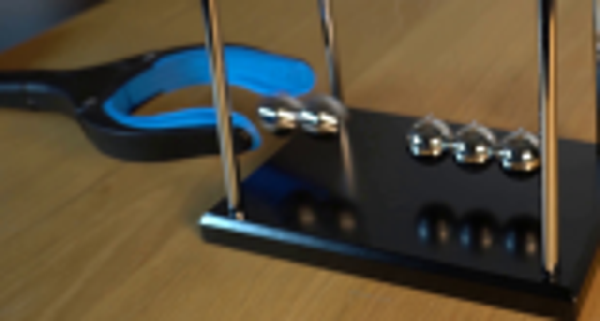
视觉工具实际返回图片 7
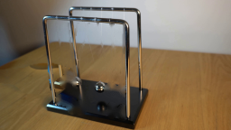
视觉工具实际返回图片 8
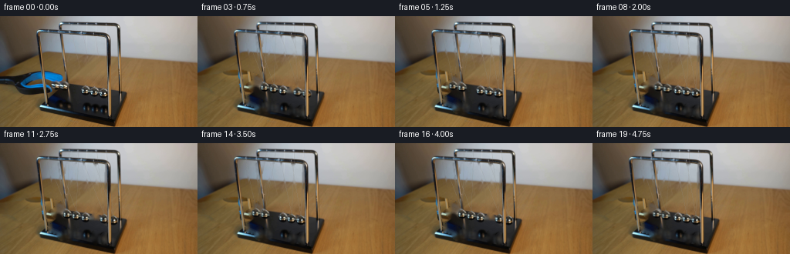
视觉工具实际返回图片 9
视觉工具实际返回图片 10
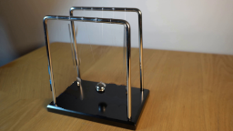
视觉工具实际返回图片 11

视觉工具实际返回图片 12

视觉工具实际返回图片 13

保存候选 3 份；完成命令 15 次；可验证图片返回 13 张。原始 API 响应与完整日志保留在本地。